OPTIONAL - Making and Serving Map Tiles with QGIS
Overview
In this exercise, you will create your own XYZ tile service using QGIS. You will begin with a georeferenced raster image, style it for web display, export it into a folder of map tiles, and optionally publish those tiles with GitHub Pages.
Concept note: A web map rarely loads one giant image all at once. Instead, it usually loads many small image tiles. Each tile covers a small part of the map at a particular zoom level. This makes web maps faster because the browser only requests the pieces needed for the current view.
What You Should Understand After This Lab
By the end of this exercise, you should be able to explain:
- why web maps use tiled images instead of a single large raster
- why web map tiles usually use the Web Mercator coordinate reference system,
EPSG:3857 - how QGIS can generate an XYZ tile folder and preview HTML page
- why a local
file:///tile path must be changed before a web-hosted map can work - how GitHub Pages can serve simple static web map files
Getting Ready
Data
We'll be using an image created, and georeferenced, by David Rumsey, and made available through The David Rumsey Map Center:
"San Francisco Scale Model, Scale 1 inch 100 ft. Constructed by Federal Works Agency, Work Projects Administration. Sponsored by City Planning Commission. 1940 (Raster Image)" https://searchworks.stanford.edu/view/dv566pd4199
- Download the data from: https://searchworks.stanford.edu/view/dv566pd4199, using the Download
data_EPSG_4326.zipoption, from the download widget.
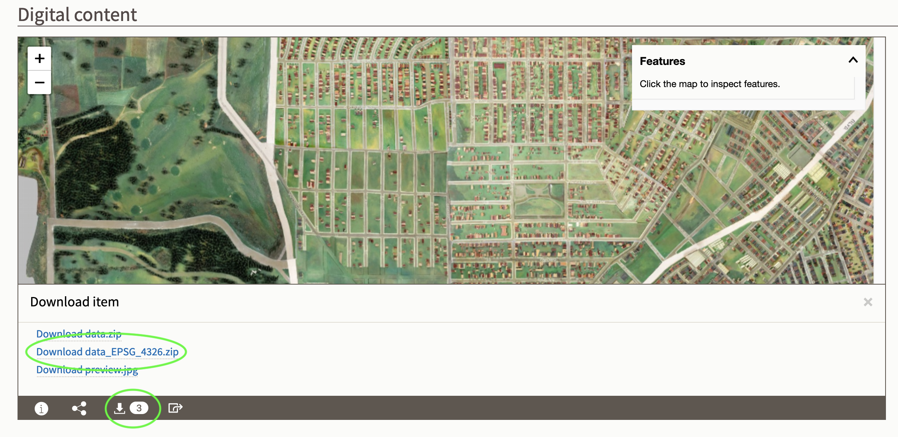
- Create a Project folder to Save and unzip the
data_EPSG_4326.zipfile to.
GitHub Account (optional)
For the optional portion of the lab, you will need both a GitHub.com account and GitHub Desktop for your operating system.
If you do not already have a GitHub account, go to https://github.com/signup and create a free one.
To download and install GitHub Desktop, see: https://desktop.github.com/
Preparing the Imagery Layer
Here, you will set the project CRS to one appropriate for XYZ tile services, EPSG:3857. You will also adjust rendering and resampling options in the Layer Styling panel to increase the legibility of the image.
Concept note: A coordinate reference system, or CRS, tells GIS software how coordinates relate to locations on Earth. Most slippy web maps use Web Mercator,
EPSG:3857, because it supports the global tile grid used by common web mapping libraries.
Add Layers
- Create a new QGIS Project, and save it to the same folder you unzipped the
data_EPSG_4326.zipimage to. - Add the
data_EPSG_4326image from the Project Home folder in the Browser panel.
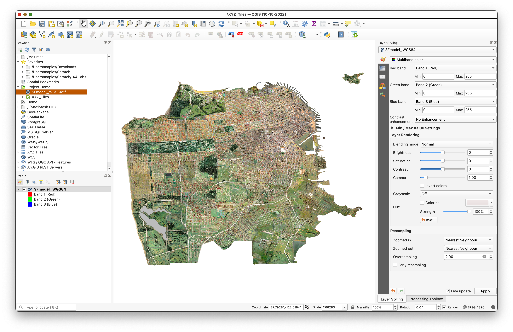
Adjust the Project CRS
- Use the Quick Map Services plugin to add a basemap to the project.
- Right-click on the Basemap Layer you added and go to >Layer CRS>Set Project CRS from Layer
- Save your changes.
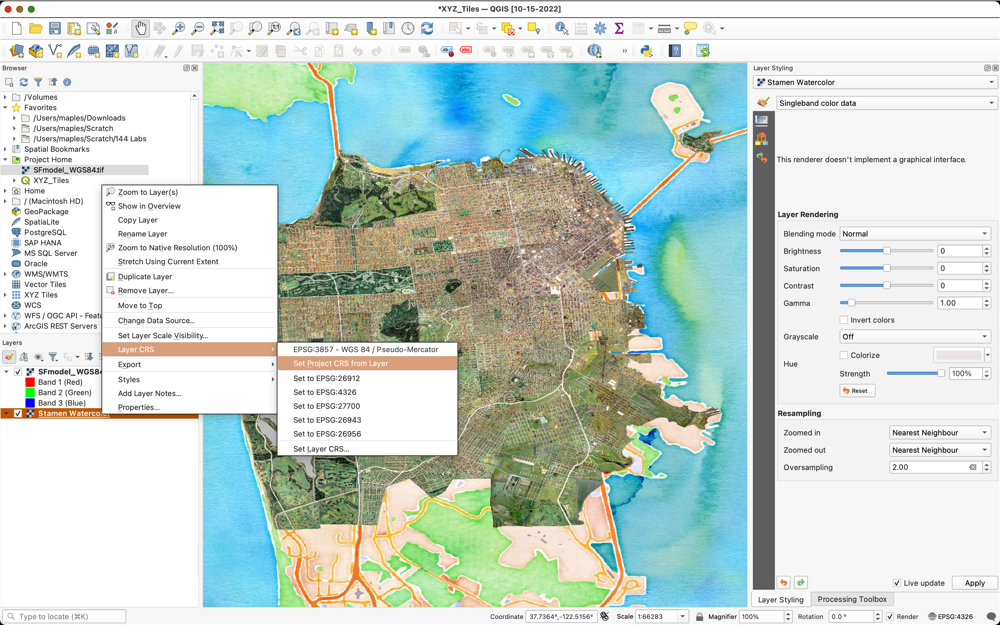
Adjust the Layer Styling
Rendering
- Select the
data_EPSG_4326layer and open the Layer Styling panel - Zoom in to a detail area at a scale of about 1:2500 and observe the "before" rendering detail and color.
The image below, show a detail area, where Golden Gate Park meets the Panhandle Park.
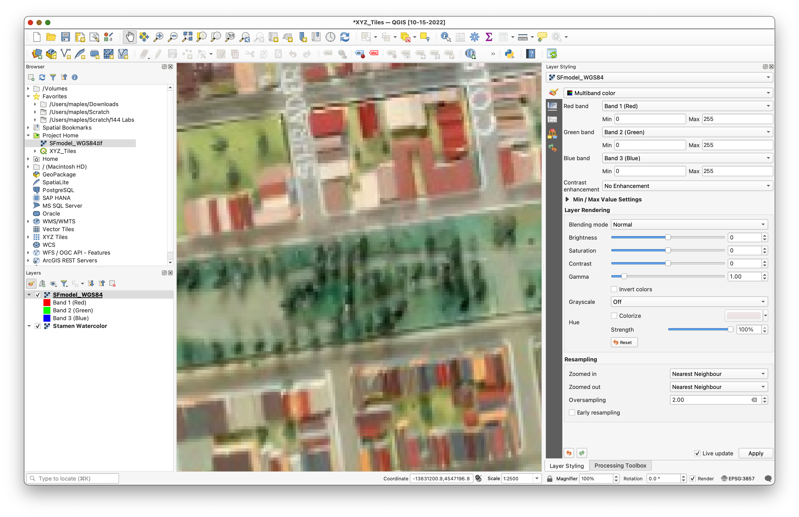
- Under Layer Rendering, adjust the Saturation to
25and the Contrast to25
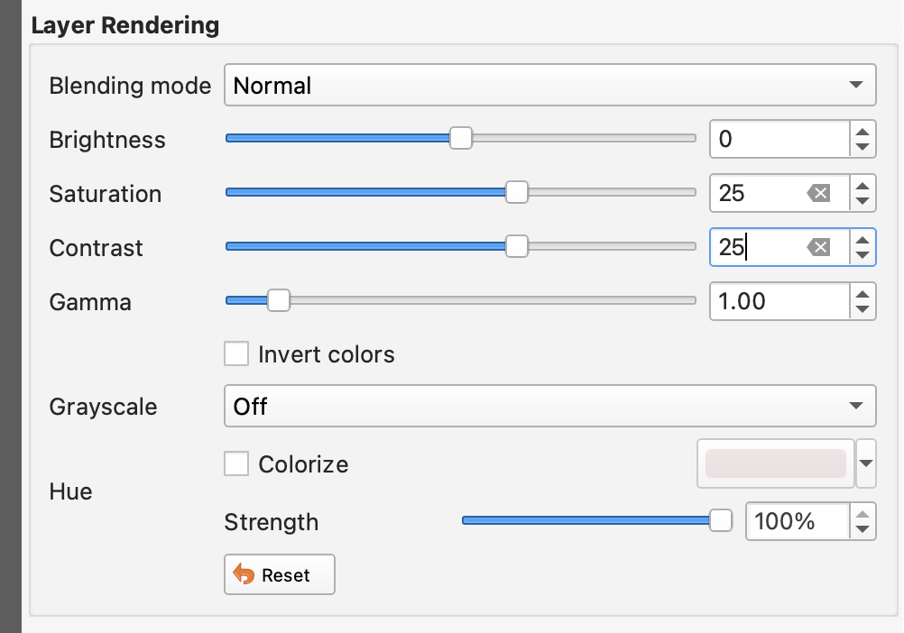
Resampling Method
- Under Resampling, set:
- Zoomed in:
Cubic - Zoomed out:
Cubic - Oversampling:
3.00
- Zoomed in:
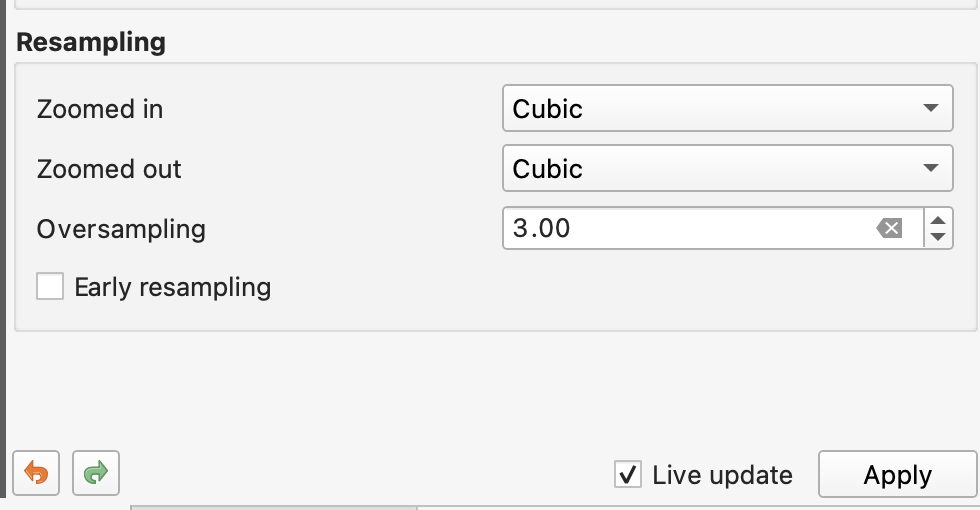
- Note the results, and that the street labels should now be a bit more legible.
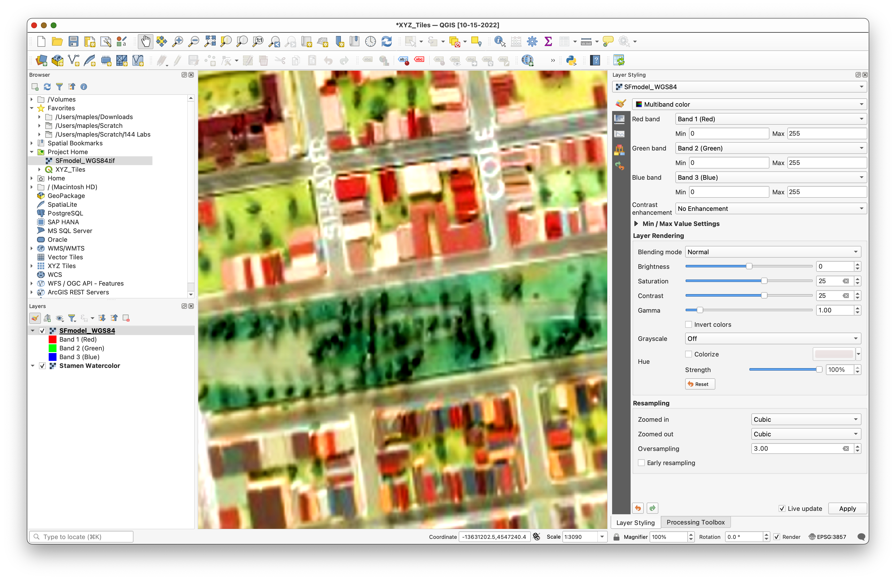
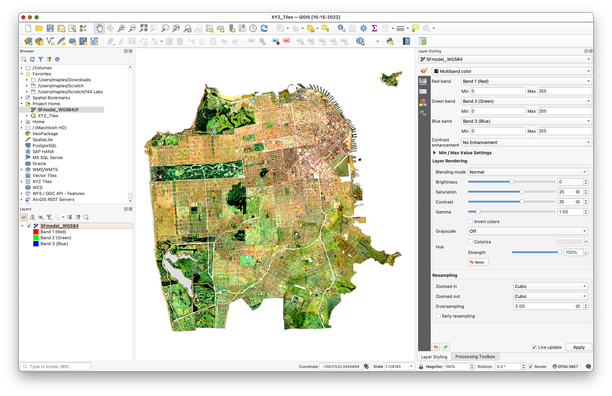
- Save your project.
Create the Directory of Tiles
- Search the Processing Toolbox for "XYZ" and open the Generate XYZ tiles (Directory) tool.
- Set the Extent as Use Current Map
- Change the following options:
- Minimum zoom:
7 - Maximum zoom:
15 - Output Directory: Make a new directory in your project folder called
SF_Model_Tiles - Output html (Leaflet): Save to the
Output directoryyou created, above, asindex.html
- Minimum zoom:
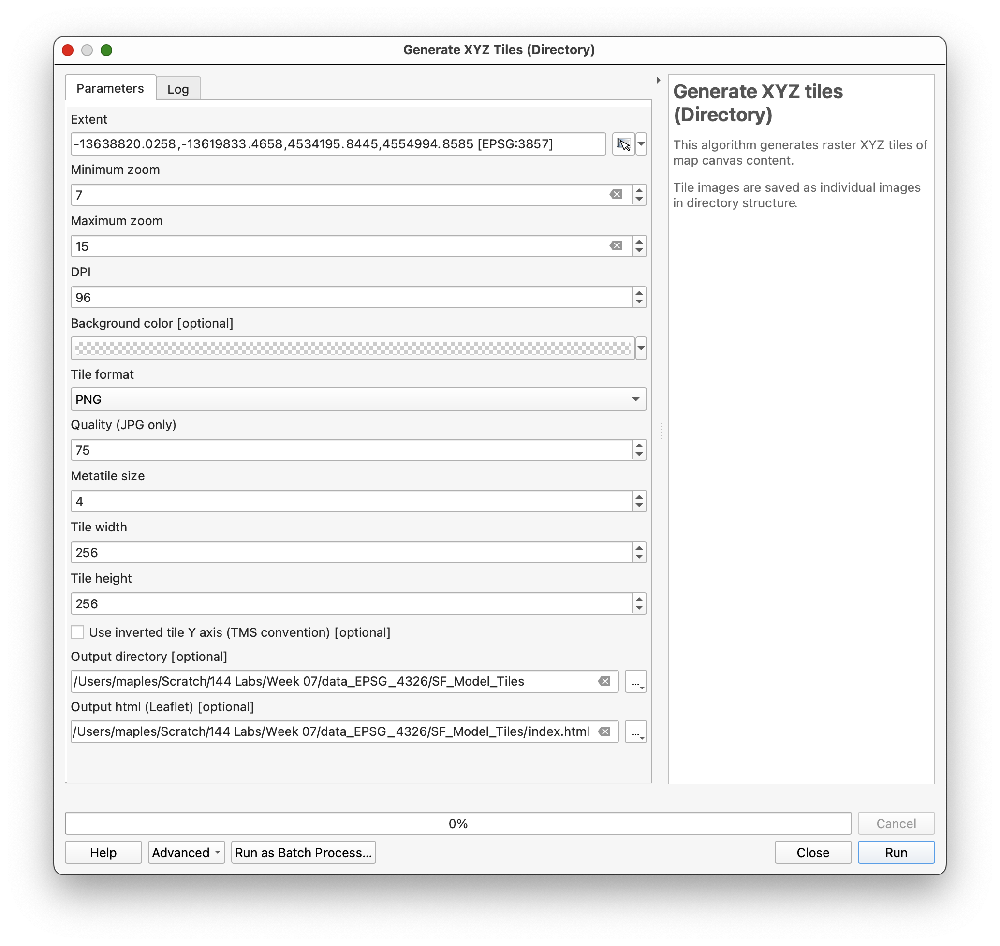
- Click Run to create the XYZ tiles, directories and
index.html.
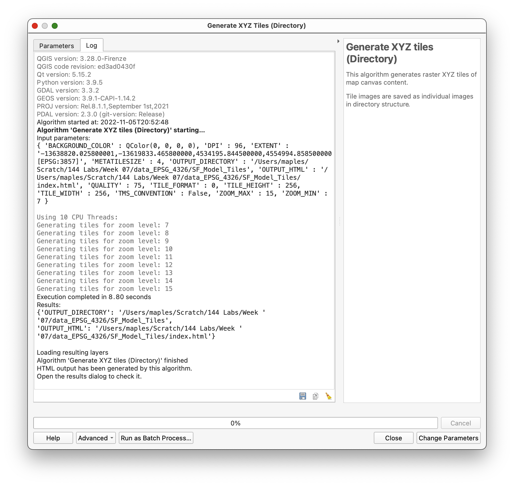
- Close the Generate XYZ Tiles (Directory) tool.
- Click on the File path: URL in the Results Viewer window that appears when the Generate XYZ Tiles (Directory) tool has finished, to open the Leaflet map and verify that the tiles have been created.
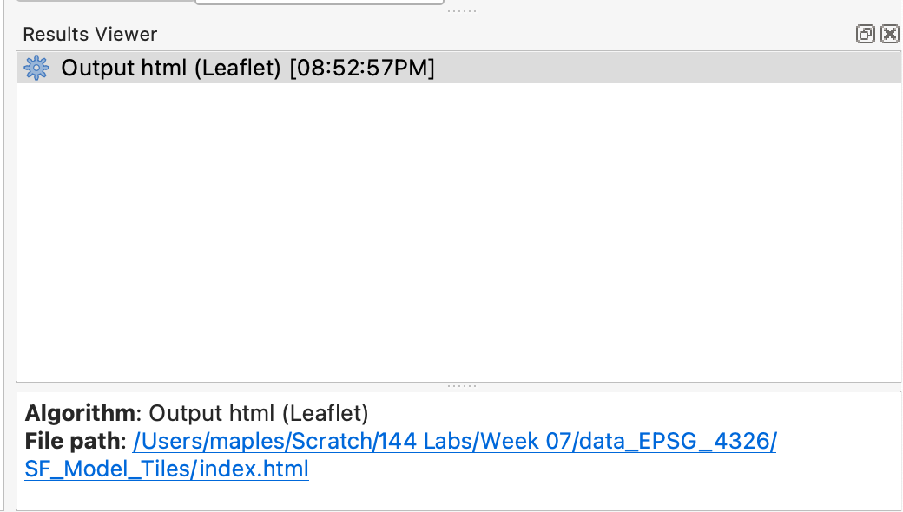
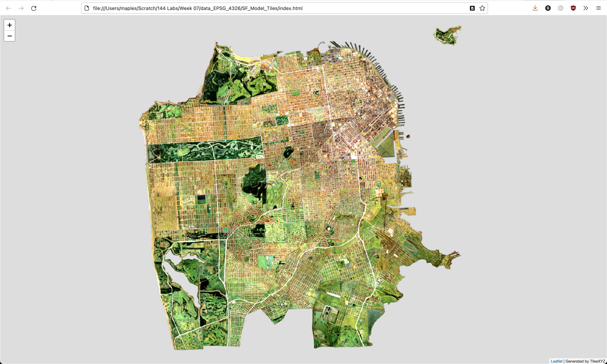
- Save your QGIS Project and Close QGIS
Concept note: The output tile folder is organized by zoom level, column, and row. That is why the tile path uses the template
{z}/{x}/{y}.png:{z}is the zoom level,{x}is the tile column, and{y}is the tile row.
Deliverable (Optional)
If you choose to complete this optional workshop, submit one of the following:
- Two screenshots of the working Leaflet map (one zoomed out showing the full layer, one zoomed in showing detail), uploaded to Canvas.
- OR a live GitHub Pages (or Stanford AFS) URL to your hosted Leaflet map, plus a short README describing where you put the tile folder and how to update the
index.htmlif needed.
Upload the tiles to GitHub (Optional)
Upload to GitHub and Edit the index.html
- Using your Text Editor, Browse to
index.htmland open it.
<!DOCTYPE html>
<html>
<head>
<title>Leaflet Preview</title>
<meta charset="utf-8" />
<meta name="viewport" content="width=device-width, initial-scale=1.0">
<link rel="stylesheet" href="https://unpkg.com/leaflet@1.5.1/dist/leaflet.css"
integrity="sha512-xwE/Az9zrjBIphAcBb3F6JVqxf46+CDLwfLMHloNu6KEQCAWi6HcDUbeOfBIptF7tcCzusKFjFw2yuvEpDL9wQ=="
crossorigin=""/>
<script src="https://unpkg.com/leaflet@1.5.1/dist/leaflet.js"
integrity="sha512-GffPMF3RvMeYyc1LWMHtK8EbPv0iNZ8/oTtHPx9/cc2ILxQ+u905qIwdpULaqDkyBKgOaB57QTMg7ztg8Jm2Og=="
crossorigin=""></script>
<style type="text/css">
body {
margin: 0;
padding: 0;
}
html, body, #map{
width: 100%;
height: 100%;
}
</style>
</head>
<body>
<div id="map"></div>
<script>
var map = L.map('map').setView([37.752990353923, -122.43432528011124], 11.0);
L.tileLayer('file:////Users/maples/Scratch/144%20Labs/Week%2007/data_EPSG_4326/SF_Model_Tiles/{z}/{x}/{y}.png', {
minZoom: 7,
maxZoom: 15,
tms: false,
attribution: 'Generated by TilesXYZ'
}).addTo(map);
</script>
</body>
</html>
Find the L.tileLayer() function in the code, above, and note that it is calling the {z}/{x}/{y}.png tiles using a file://// path on your local hard drive.
In order for this function to find the tiles once we have them on GitHub, the path value in this function will need to be updated to the path on GitHub. We'll do that, after we upload the tiles, so we can copy the tiles URL directly from GitHub.
For this (optional) part of the exercise, you need to install the GitHub Desktop application, from https://desktop.github.com/
- Start the GitHub Desktop application
- Login to your GitHub Account as directed
- Go to File>Add Local Repository...
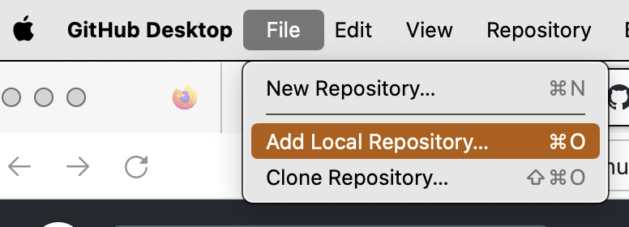
- Click the link to "create a repository here, instead"
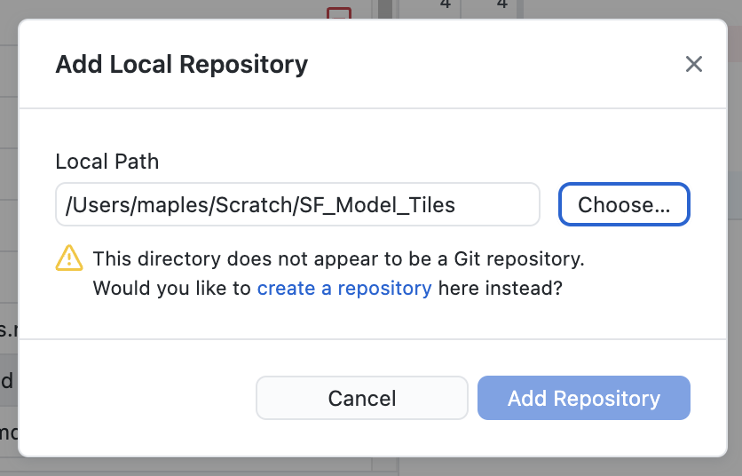
- Check the Initialize this repository with a README option...
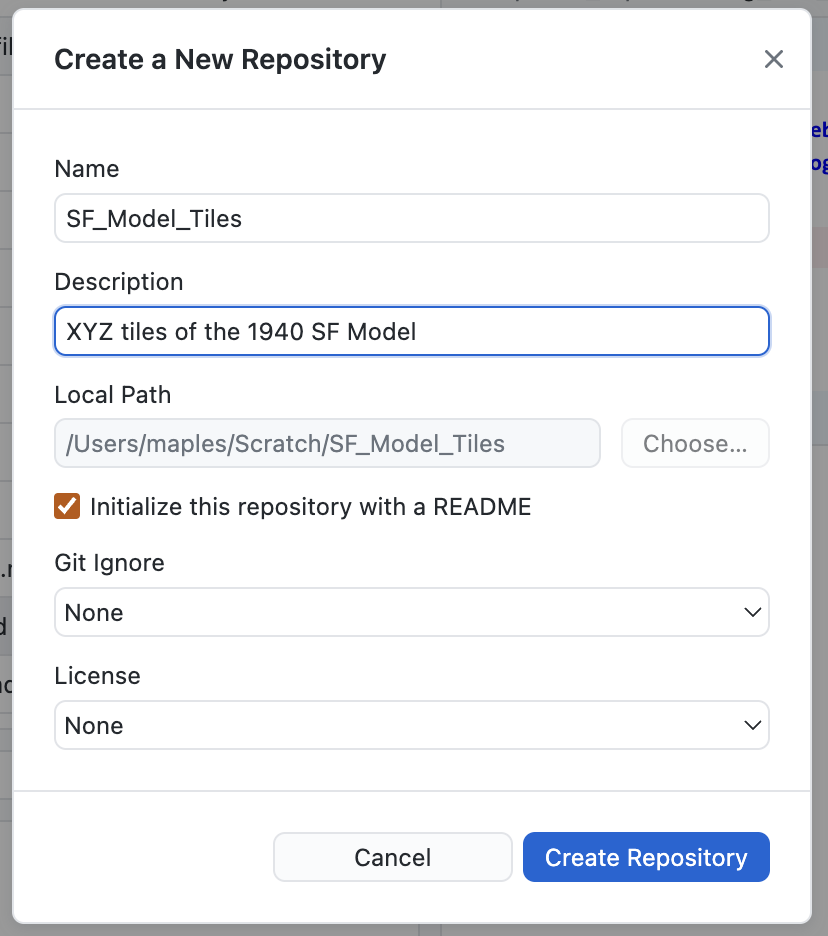
Uncheck the option to Keep this code private, then Click Create Repository
In the Main GitHub Desktop Window, click Publish repository, then click it, again, to publish the repo to GitHub.com.
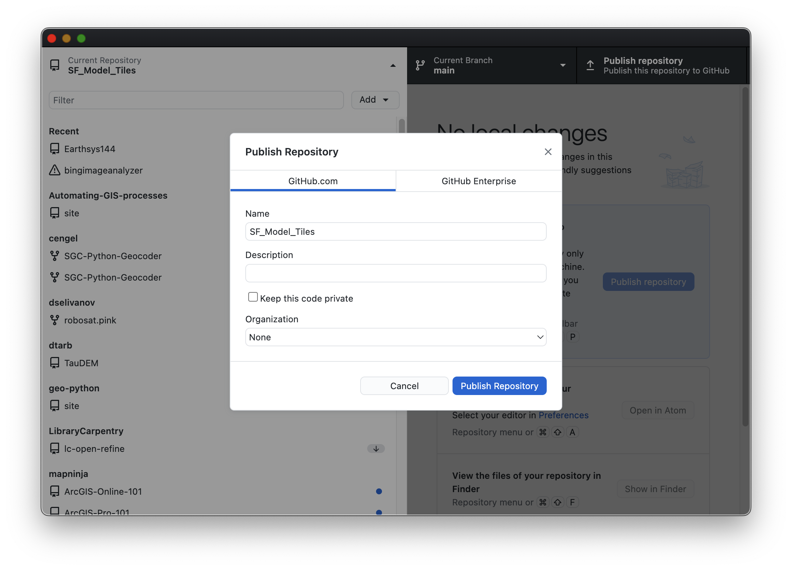
Wait for the upload of the file in the folder (there are MANY!).
Click on the View on GitHub Button to open the Repository in your browser.
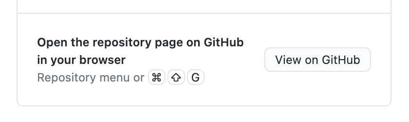
- Examine the resulting repository to see that it looks similar to the following:
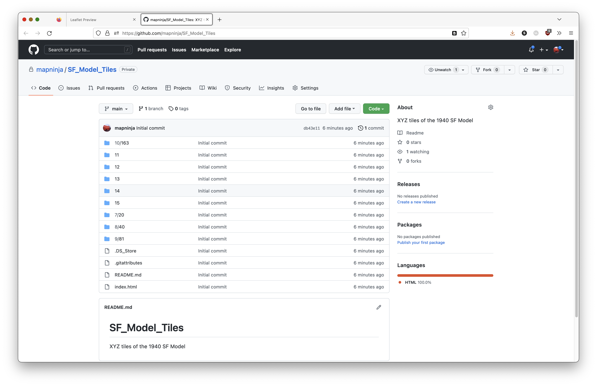
Turn on GitHub Pages for the Repo
- From the
SF_Model_TilesRepository page, go to the Settings>Pages section. - Select
Mainas the branch to use for GitHub Pages, and click Save.
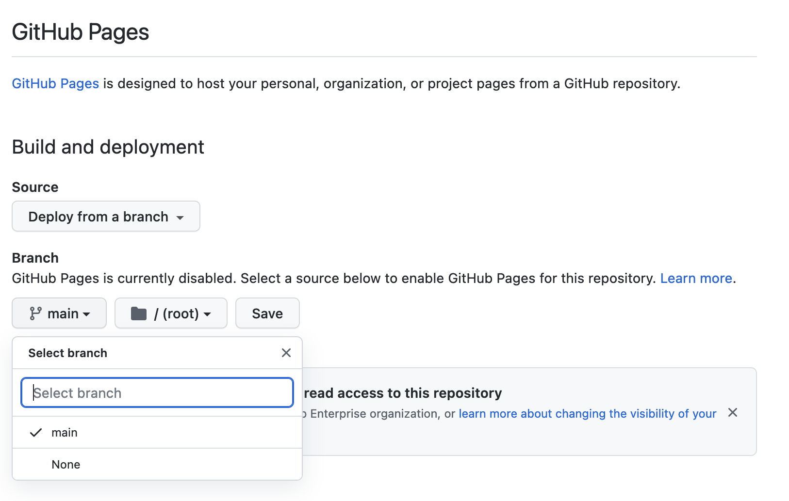
- Refresh the Settings>Pages page, every few minutes, until the repository pages are published, and the URL appears at the top of the page.
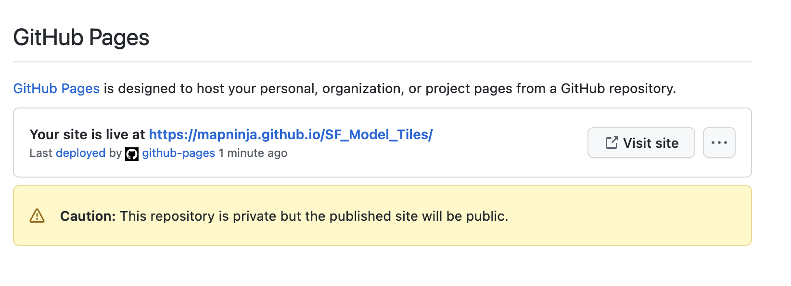
- Click on the Visit Site button, to see that the Leaflet Map is currently disabled.
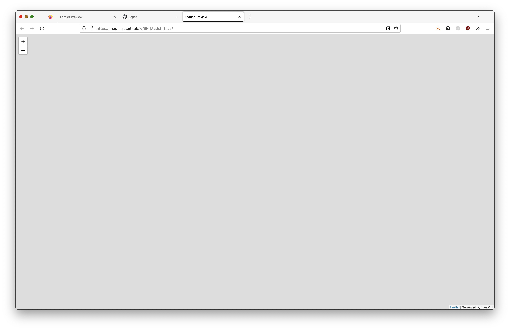
This is because the path in the L.tileLayer() function is still pointing to the files on your local hard drive, which is not accessible to GitHub. In the next section, you will edit the index.html file to point to the new location of the tiles, on GitHub.
Edit the index.html file to Use the GitHub Hosted Tiles
- Return to the main
SF_Model_Tilesrepository page, on GitHub. - Click into one of the numbered Repository folders, such as
11, then continue to click into folders, until you find a*.pngfile.
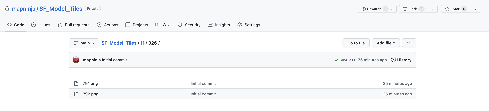
- Click "into" the
*.pngfile, then click on the Download button - Select and Copy the URL for the
*.pngimage, from the URL bar of your browser.
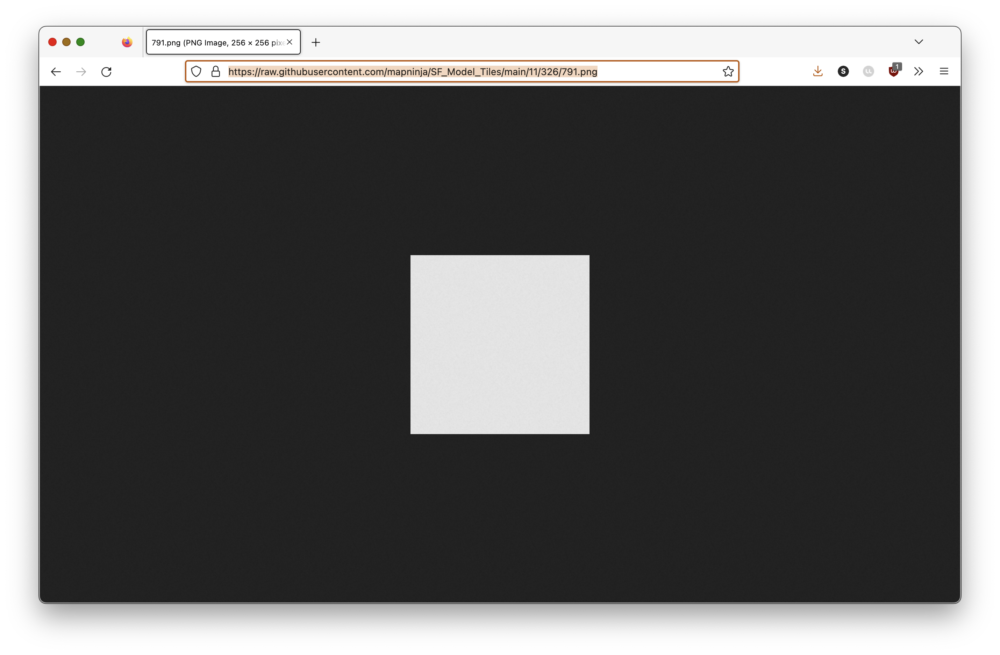
- Paste this
download URLinto a New text document, in your plain text editor.
Your download URL should be similar to the one, below, but with your username, and the subpath to the specific *.png image you browsed to.
https://raw.githubusercontent.com/mapninja/SF_Model_Tiles/main/11/326/791.png
- Select and Delete the part of the
download URLafter/main/, so that you have something like the following, left:
https://raw.githubusercontent.com/mapninja/SF_Model_Tiles/main/
- Now you need to paste the
`{z}/{x}/{y}.pngtemplate for the service, to the end of the URL, like so:
https://raw.githubusercontent.com/mapninja/SF_Model_Tiles/main/{z}/{x}/{y}.png
- Select and copy this XYZ tile template URL
- Return to the Main Repository Page and click on the index.html file to view it.
- Click on the Edit button
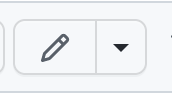
to open the GitHub Text editor. - Locate the following line in the
index.htmlfile (your file:/// path will be slightly different):
L.tileLayer('file:////Users/maples/Scratch/144%20Labs/Week%2007/data_EPSG_4326/SF_Model_Tiles/{z}/{x}/{y}.png', {
- Select the entire
file:////...path between the single quotes (' ') and paste the copied path into it's place, like so:
L.tileLayer('https://raw.githubusercontent.com/mapninja/SF_Model_Tiles/main/{z}/{x}/{y}.png', {
- Create a Commit comment and click the Commit changes button.
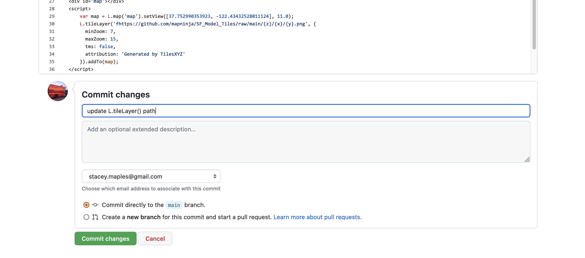
Test your live Leaflet Map
- Give it a few minutes for the changes to be published to GitHub Pages, then return to Settings>Pages, for the repo, and click on the Visit Site button to open the Leaflet Map:
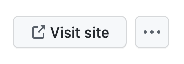
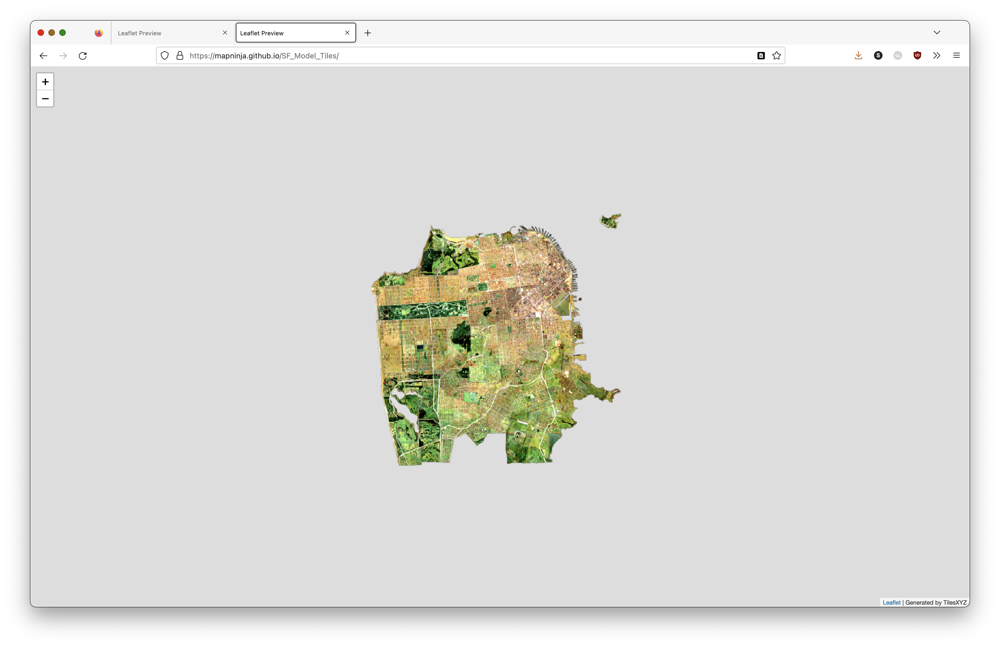
You can see the live Leaflet Map for the example, here:
https://mapninja.github.io/SF_Model_Tiles/
Using Your Service in Other Platforms
Now that you have a stable, public XYZ Tile Service, you can connect to it with any platform that supports XYZ Tiles, using your XYZ Tile Template URL (here's the example, URL):
https://raw.githubusercontent.com/mapninja/SF_Model_Tiles/main/{z}/{x}/{y}.png
Here is the XYZ Tile Service being served, as a Tile Layer, in ArcGIS Online:
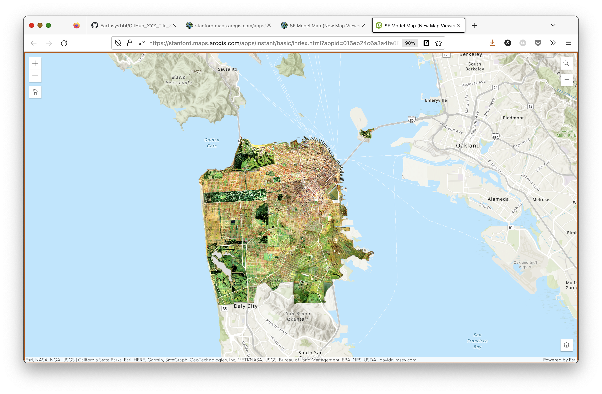